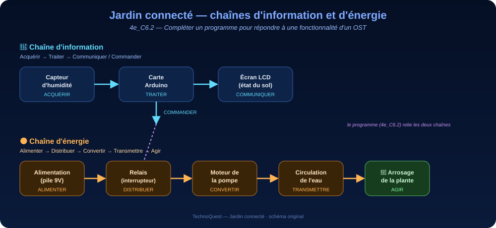

En 5e, sur le lampadaire, tu as traduit un programme en français et réglé ses paramètres pour observer l'effet sur l'objet réel.
Cette année, ce qui change : tu vas écrire la logique d'arrosage toi-même, sous forme d'algorigramme puis de programme. Ce n'est plus un texte à comprendre : c'est une décision à formuler assez précisément pour qu'une machine l'exécute sans se tromper.
Tu arrives maintenant ? Un algorigramme est un dessin qui montre les décisions d'un programme : un losange pour une question, un rectangle pour une action.
Quatre gestes à faire une fois, au début, et ta séance ne se perdra pas. Tu les as peut-être déjà faits une autre année : refais-les, c'est court. Et si tu ne les as jamais faits, tout est écrit ici — tu n'as besoin de rien d'autre.
NIVEAU-SUJET-TON NOM. Un projet sans nom est introuvable la semaine suivante.Pendant les vacances, les plantes du collège ne sont pas toujours arrosées. En Martinique, le carême peut être rude : certaines reçoivent trop d'eau, d'autres pas assez — et l'eau coûte cher. Le collège dispose d'un prototype d'arrosage automatique… mais son programme est INCOMPLET : à toi de le compléter, de le tester et de prouver qu'il répond au besoin.
FAIRE pour comprendre : tu manipules le prototype dans la page (capteur simulé, banc de tests) — avant toute définition.
COMPRENDRE : les « À retenir » nomment les concepts : chaîne d'information, chaîne d'énergie, instruction conditionnelle, cas frontière.
REFAIRE pour comprendre encore : tu réinvestis la condition à seuil dans les défis (hystérésis, capteur absurde) — même concept, autre habit.
Comment compléter le programme du prototype pour qu'il arrose automatiquement — et uniquement quand c'est nécessaire ?
Ta mission : compléter le programme du prototype (les blocs à remettre en ordre, puis les trous du Python), le tester dans l'éditeur embarqué, et valider son comportement sur un banc de tests — cas frontière compris.
Production attendue : un programme complété et testé, le banc de tests au vert, et un court argumentaire justifiant le seuil choisi.
| Compétence générale | C6 — Comprendre et modifier un programme associé à une fonctionnalité d'un objet ou d'un système technique |
|---|---|
| Sous-compétence | 4e_C6.2 — Compléter un programme pour répondre à une fonctionnalité d'un OST |
| Compétences mobilisées | 4e_C6.24e_C4.1 chaîne d'énergie 4e_C4.5 transformation des données 4e_C1.4 usage raisonné |
| Connaissances associées | Instruction conditionnelle, capteur analogique, seuil, structuration d'un programme (blocs et Python) |
| Capacité attendue (observable) | Remettre en ordre puis compléter la condition (seuil d'humidité) d'un programme FOURNI, l'exécuter dans l'éditeur, et prouver son comportement par un banc de tests |
| Niveau de maîtrise visé | Séance 1 : découverte-entraînement (chaîne d'information, capteur, remise en ordre) · Séance 2 : consolidation (la capacité observable est travaillée : compléter ET tester la condition) · Séance 3 : validation-évaluation (banc de tests + cahier des charges → grille LSU 1-4 ci-dessous) |
| Domaines du socle | D1.3 (langage informatique) · D2 (méthodes/outils) · D4 (systèmes techniques) — et D3/D5 pour le volet impact (séance 3) |
| Compétence numérique (CRCN) | 3.4 Programmer, Niv. 2 — action observable : condition complétée et exécutée dans l'éditeur embarqué ; trace : réponses, banc de tests et badges sauvegardés dans la page |
🅰 Avec matériel : l'éditeur Vittascience relié à une carte réelle + capteur d'humidité + relais + petite pompe 5 V ou DEL de substitution (très basse tension uniquement — jamais de secteur).
🅱 En simulation : les barres 🧪 bleues des séances 1, 2 et du Bonus embarquent l'éditeur Vittascience (blocs à gauche, Python à droite) — un clic les déplie. Le simulateur de pompe de la séance 2 complète le tout. C'est le parcours principal.
🅲 Sans matériel : la remise en ordre, le Python à trous, le simulateur de pompe et le banc de tests fonctionnent entièrement dans la page, hors ligne.

La carte relie les deux chaînes : elle traite l'information reçue du capteur puis commande le relais qui alimente la pompe. 📐 Règle du schéma : l'information en haut, l'énergie en bas, l'ordre qui descend.
0 / 8 activités validées
Question directrice : comment mesurer l'humidité du sol et transmettre cette information ?
« Acquérir », c'est capter une grandeur du monde réel. Quel composant touche la terre du pot ?
Suis le schéma des chaînes fonctionnelles ci-dessus, de gauche à droite : ce qui capte → ce qui traite → ce qui affiche. Reporte chaque bloc dans la bonne case.
capteur d'humidité → acquiert · carte programmable → traite · écran LCD → communique. La chaîne d'information : acquérir → traiter → communiquer. Le capteur ne décide RIEN : c'est le programme de la carte qui décide.
humidite = valeur_brute × 100 / 1023.1023 × 100 / 1023 : simplifie avant de calculer. Et 512, c'est à peu près la moitié de 1023…
La formule est une proportionnalité : (valeur ÷ 1023) × 100. Pour la dernière question : le capteur ne sait QUE mesurer — tout calcul est fait par le programme (4e_C4.5 : transformation des données).
1023 → 100 % · 0 → 0 % · 512 → ≈ 50 % · conversion faite par le programme de la carte. C'est la transformation d'une donnée brute (0-1023) en information utile (un pourcentage) — exactement le rôle du TRAITEMENT dans la chaîne d'information.
| humidite = valeur_brute * 100 / 1023 | |
| attendre(1) | |
| while True: # répéter sans fin | |
| print("Humidité du sol :", humidite, "%") | |
| valeur_brute = lire_capteur(A0) |
🎨 Lis le code en couleurs : variables · "textes" · nombres · mots-clés · = et opérateurs
L'éditeur s'ouvre DANS la page : blocs à gauche, Python à droite, console en bas. Assemble les blocs « capteurs » dans l'ordre que tu as choisi, exécute, et observe la console. (Connexion Internet nécessaire pour l'éditeur ; le reste de la page fonctionne hors ligne.)
🌐 Cette activité a besoin d'Internet. L'éditeur ci-dessous est hébergé par Vittascience : si le cadre reste blanc, c'est la connexion, pas ton ordinateur. Dans ce cas, écris ton programme sur le cahier — la logique est ce qui compte, la saisie se fera à la séance suivante.
On ne peut pas convertir une valeur qu'on n'a pas encore lue. Et « répéter sans fin » englobe tout ce qui doit se refaire chaque seconde.
Ordre logique du technicien : ① ouvrir la répétition (while True:) → ② LIRE le capteur → ③ CONVERTIR la valeur → ④ AFFICHER le résultat → ⑤ ATTENDRE avant la mesure suivante. Vérifie ta prédiction dans l'éditeur avant de valider.
Ordre : while True: (1) → valeur_brute = lire_capteur(A0) (2) → humidite = valeur_brute * 100 / 1023 (3) → print(…) (4) → attendre(1) (5).
while True:
valeur_brute = lire_capteur(A0)
humidite = valeur_brute * 100 / 1023
print("Humidité du sol :", humidite, "%")
attendre(1)
Lire AVANT de convertir, convertir AVANT d'afficher : chaque ligne utilise ce que la précédente a rangé dans sa boîte.
Question directrice : comment décider si la plante doit être arrosée, et commander la pompe ?
Un sol SEC, c'est une humidité BASSE. Basse par rapport à quoi ?
Déroule la frontière À LA MAIN : humidite = 30, seuil = 30 → « 30 < 30 » est FAUX → on passe dans le SINON. Le cas limite se décide toujours en revenant au BESOIN.
humidité inférieure au seuil → sol sec → on active la pompe. À la frontière (30 pile), « 30 < 30 » est FAUX → pompe à l'arrêt : le sol est juste assez humide, on économise l'eau. Un programme ne « sent » rien : il compare des nombres.
Blocs à gauche, Python à droite. Sans carte réelle, remplace lire_capteur_pourcent(A0) par une valeur de ton choix (par ex. humidite = 12) et demarrer_pompe() par print("POMPE EN MARCHE") : la console te montre la décision.
🌐 Cette activité a besoin d'Internet. L'éditeur ci-dessous est hébergé par Vittascience : si le cadre reste blanc, c'est la connexion, pas ton ordinateur. Dans ce cas, écris ton programme sur le cahier — la logique est ce qui compte, la saisie se fera à la séance suivante.
Reprends ta règle de l'activité 4 : elle se traduit mot à mot. « inférieure » → quel symbole ?
Trou par trou : ① la condition du SI est la traduction directe de « humidité inférieure au seuil » ; ② DANS le SI (sol sec), on démarre ; ③ dans le SINON (sol assez humide), on arrête. Puis exécute avec humidite = 12 : quelle branche s'affiche ?
seuil = 30
while True:
humidite = lire_capteur_pourcent(A0)
if humidite < seuil:
demarrer_pompe()
else:
arreter_pompe()
attendre(1)
Avec humidite = 12 : « 12 < 30 » est VRAI → la pompe démarre. Remarque de technicien : le nombre 30
n'est écrit qu'à UN endroit (la variable seuil) — pour changer le réglage, une seule ligne à modifier.
| Test | humidité | seuil | Attendu (le besoin) | Obtenu | |
|---|---|---|---|---|---|
| T1 — sol sec | 10 | 30 | POMPE EN MARCHE | — | |
| T2 — sol humide | 80 | 30 | pompe à l'arrêt | — | |
| T3 — FRONTIÈRE | 30 | 30 | pompe à l'arrêt | — |
Si le programmeur avait écrit <= au lieu de <, T1 et T2 passeraient quand même… et T3 ?
Un banc de tests couvre chaque cas du besoin + chaque FRONTIÈRE. « Ça a marché une fois » n'est pas une preuve : trois tests verts, frontière comprise, en sont une. (Souviens-toi du lampadaire : même démarche.)
T1 : 10 < 30 VRAI → MARCHE ✔ · T2 : 80 < 30 FAUX → arrêt ✔ · T3 : 30 < 30 FAUX → arrêt ✔. La frontière est LE piège classique : avec <=, la pompe arroserait un sol déjà assez humide — gaspillage. Le symbole se choisit avec le BESOIN, pas au hasard.
< et <= ;
et un comportement se PROUVE par un banc de tests — jamais par « ça a l'air de marcher ».Question directrice : le système répond-il au besoin, et quel est son impact ?
| Fonction / contrainte | Critère | Ton verdict |
|---|---|---|
| Détecter un sol sec | Valeur d'humidité mesurée et convertie | |
| Arroser uniquement si nécessaire | Déclenchement sous le seuil seulement | |
| Économiser l'eau | Pas d'arrosage à la frontière ni au-dessus | |
| Fonctionner en sécurité | Alimentation du prototype |
Un verdict sans preuve ne vaut rien : associe chaque ligne à l'activité qui l'a démontrée.
C'est la démarche de VALIDATION : besoin → critère → test → verdict. La sécurité électrique n'est pas négociable : un prototype de collège fonctionne en très basse tension, toujours.
Les 4 exigences sont respectées, et chacune a sa preuve : mesure (act. 3), banc complet (act. 6), frontière T3 (act. 6), très basse tension (🅰). Valider, c'est relier chaque ligne du cahier des charges à un test qui la prouve.
Que se passe-t-il un jour de pluie avec l'arrosage à heure fixe ? Et avec le nôtre ?
Pense aussi aux LIMITES (usage raisonné 4e_C1.4) : un capteur peut dériver ou s'encrasser, le seuil dépend de la plante, et fabriquer le système a aussi un coût. Un bon argument reconnaît les limites.
Il n'arrose QUE si le sol est sec — un jour de pluie, l'arrosage à heure fixe gaspille, le nôtre s'abstient (T2 !). Arguments possibles : économie d'eau en carême, plante mieux portante (ni trop ni trop peu), MAIS entretien du capteur et choix du seuil restent à la charge de l'humain : automatique ne veut pas dire sans surveillance.
Un système automatisé enchaîne deux circuits complémentaires : la chaîne d'information (un capteur ACQUIERT une donnée brute, le programme la TRAITE — conversion, comparaison au seuil —, un écran COMMUNIQUE) et la chaîne d'énergie (l'alimentation fournit, le relais distribue, la pompe convertit en action). Compléter un programme (4e_C6.2), c'est ajouter ou ajuster une instruction conditionnelle (SI … ALORS … SINON) sans tout réécrire — puis prouver le comportement par un banc de tests dont le cas frontière. Le choix du seuil est un compromis technique : trop bas, la plante a soif ; trop haut, on gaspille.
🔁 Le concept invariant (règle n°18) : ce que tu as refait dans les défis (hystérésis, garde-fou du capteur), tu l'avais déjà fait en complétant l'arrosage — le concept commun s'appelle la comparaison à un seuil : elle se dessine (algorigramme, chaînes de la règle n°6), se code en blocs et se lit en Python.
Grille de maîtrise (LSU) appliquée à la compétence 4e_C6.2 — évaluée en séance 3, sur la capacité observable (compléter, exécuter, prouver) :
Aides intégrées : chaque activité embarque deux niveaux d'aide (un indice, puis la démarche) — à ouvrir AVANT de regarder la correction.
Élèves rapides : le bloc 🎁 Bonus les attend (deuxième condition, seuil réglable). Approfondissement 3e : la version multi-conditions t'attend dans l'atelier « Variables, types et systèmes » (3e_C9.1) — mêmes boîtes, mêmes bancs de tests.
30 questions — chaque mauvaise réponse est réfutée une par une — pour vérifier la chaîne d'information, la conversion de la mesure, la condition et la preuve par le banc de tests.
🚀 Ouvrir le QCM d'entraînementTrois défis ouverts, sans vérificateur :
🌙 Défi nuit : on ne veut PAS arroser la nuit (l'eau s'évapore moins, la pompe réveille le gardien).
Ajoute une deuxième condition avec luminosite : la pompe ne démarre que si le sol est sec ET s'il fait jour.
🎚 Défi réglage : remplace le seuil fixe par une valeur réglable (un potentiomètre en 🅰, une variable modifiée en tête de programme en 🅱) — combien de lignes as-tu dû changer ? Pourquoi si peu ?
🏡 Défi maison : explique à quelqu'un de ta famille pourquoi le test « 30 pile » est le plus important du banc. S'il trouve la réponse tout seul à « et avec ≤ ? », vous avez gagné tous les deux.
Blocs à gauche, Python à droite, console en bas. (Connexion Internet nécessaire pour l'éditeur ; le reste de la page fonctionne hors ligne.)
🌐 Cette activité a besoin d'Internet. L'éditeur ci-dessous est hébergé par Vittascience : si le cadre reste blanc, c'est la connexion, pas ton ordinateur. Dans ce cas, écris ton programme sur le cahier — la logique est ce qui compte, la saisie se fera à la séance suivante.
Corrigés : act. 1 : capteur → carte → écran · act. 2 : 100 % / 0 % / ≈50 % / le programme ·
act. 3 (ordre) : while (1) → lire (2) → convertir (3) → print (4) → attendre (5) · act. 4 : inférieure + active ; frontière → arrêt ·
act. 5 : < / demarrer_pompe() / arreter_pompe() ; humidite 12 → démarre ·
act. 6 : MARCHE / arrêt / arrêt (frontière = piège du <=) · act. 7 : 4 « respecté » avec preuves · act. 8 : « n'arrose que si sec ».
Verrous expérientiels : act. 3 exige l'ouverture de l'éditeur 🧪, act. 5 aussi, act. 6 exige les 3 tests du banc exécutés. Les réponses et badges des élèves restent dans la page (sauvegarde locale du poste).
Progressivité 2024 : 4e_C6.2 travaillée ici prépare 4e_C6.3 (tester/valider une modification) et l'atelier 3e_C9.1 (fonctions, types, multi-conditions). En amont : le SI/SINON du lampadaire de 5e.
Matériel (version 🅰) : carte + capteur d'humidité + relais + pompe 5 V ou DEL — très basse tension uniquement, jamais de secteur.
Ce panneau est un loquet de confort : son code est lisible dans la source publique de la page. N'y placer AUCUN corrigé d'évaluation sommative (règle du dépôt).